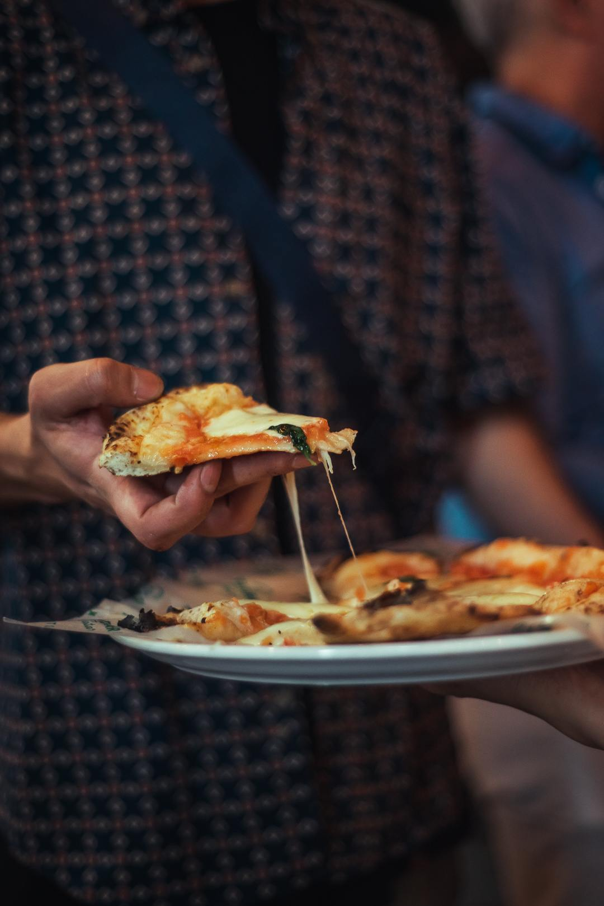
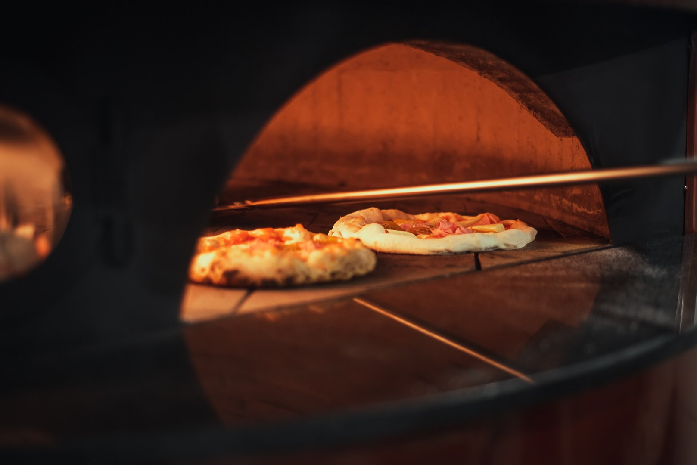

SOMOS SORRENTO LA PIZZERÍA NAPOLITANA AL PASO MAS BONITA DE CORDÓBA, NOS CARACTERIZA NUESTRA EXELENTE ATENCION Y ESTILO NAPOLITANO DEL ABUELO. PIZZERÍA DEL POPOLO CON TODO EL ESTILO ITALIANO QUE TE EXPLOTA EN EL PALADAR...!!

ESTE ES EL FRENTE DE NUESTRO LOCAL UBICADO AL FRENTE DEL ICONICO MUSEO CARAFFA A METROS DE LA PLAZA ESPAÑA EN EL MEDIO DE EL BARRIO NUEVA CORDOBA CENTRO DE LA NUESTRA CIUDAD.
NUESTRA PIZZA SE CARACTERIZA POR SU MASA ESPECIALMETE HECHA CON LA RECETA DEL ITALIANA DEL ABUELO, UNA PEQUEÑA CANTIDAD DE SALSA NAPOLITANA Y DEPENDIENDO TU ELECCION LOS MEJORES PRODUCTOS ESPECIALMENTE SELECCIONADOS PARA QUE SEA UNA VERDADERA DELICIA.
